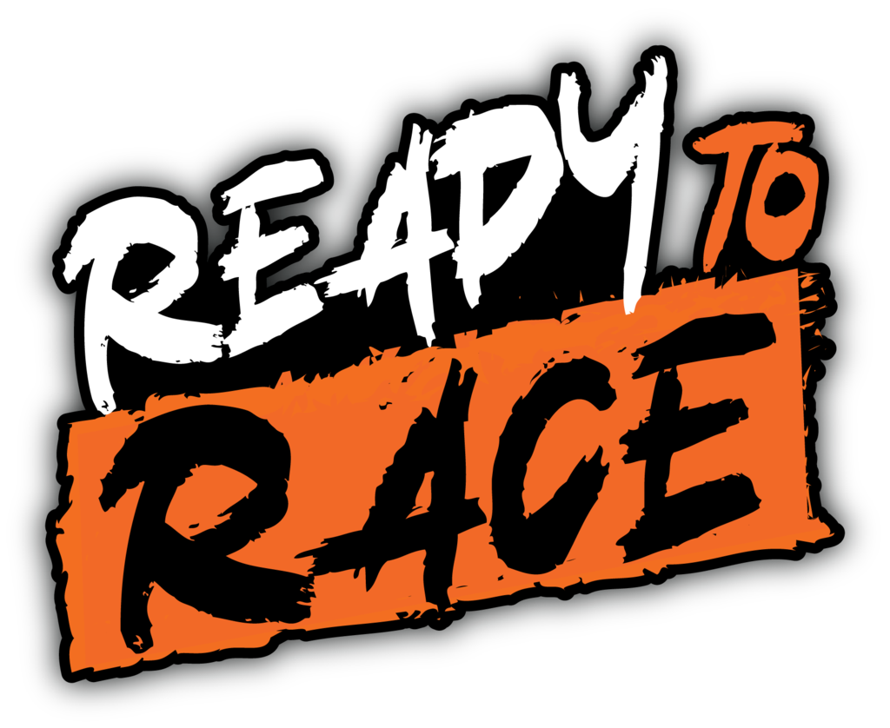

David Cooper - Writer Apr 04, 2020, 3:30 PM
Dưới góc nhìn của người ngoại đạo, những chiếc mô tô địa hình trông rất giống nhau. Chúng đều tuân theo một kiểu thiết kế chắn bùn, phuộc và khí động học. Nếu không phải dân trong nghề thì bạn sẽ chỉ phân biệt được chúng qua màu sắc.
Tuy nhiên trên thực tế, không có chiếc mô tô nào giống hệt đối thủ của nó, có một số chiếc thực sự nổi trội, vượt lên trở thành ngôi sao trong phân khúc. Tạp chí xe Hotcars đã đánh giá và vinh danh 10 chiếc mô tô địa hình tốt nhất trong năm 2020 ở danh sách dưới đây

Vị trí số một thuộc về chiếc mô tô địa hình 450 SX-F của hãng xe KTM. Đây là chiếc mô tô địa hình thường được xếp vào top đầu trong nhiều năm vừa qua.

Với tông màu cam rực rỡ bắt mắt, kiểu dáng thể thao dữ dằn, thương hiệu KTM danh tiếng, chiếc xe này luôn là niềm ao ước của những người hâm mộ. Mỗi linh kiện, phụ tùng tạo nên chiếc xe đều được các chuyên gia đánh giá là có cấu tạo, thiết kế chuẩn mực. Nhược điểm duy nhất của KTM 450 SX-F chính là mức giá lên tới 11.000 USD (255 triệu).
Trong lĩnh vực sản xuất ô tô và xe đua thể theo, hãng Honda luôn làm hài lòng khách hàng bằng những sản phẩm có hiệu năng ấn tượng. Kể cả khi Honda không đạt được kết quả tốt trong mùa giải đua mô tô địa hình 2020, hãng xe này vẫn luôn cố gắng để cải thiện, phát triển sản phẩm. Và đó là lý do để chiếc Honda CRF450-WE ra đời.

Chiếc Honda CRF450-WE không phải là một sản phẩm thuộc dòng CRF thông thường. Chữ 'WE' ở cuối là viết tắt của 'Works Edition'. Đây là phiên bản giới hạn được trang bị những công nghệ tiên tiến nhất mà đội đua Honda hiện có.
Giống như hai mẫu KTM 450 SX-F và Honda CRF450-WE đã kể trên, chiếc Kawasaki KX450F cũng là một chiếc mô tô địa hình có động cơ 450cc. Để điều khiển được những mẫu xe công suất lớn này đòi hỏi người lái phải có kinh nghiệm lâu năm.
Với công suất gần 60 mã lực kết hợp bộ khung xe chỉ có khối lượng xấp xỉ 110 kg, Kawasaki KX450F là một trong những chiếc xe nhanh nhất ở phân khúc mô tô địa hình.

Với những khách hàng không chuyên, có thể tìm tới mẫu xe công suất nhỏ hơn, chiếc KTM 300 XC TPI với động cơ hai thì 300cc.
Theo hãng KTM quảng cáo, chiếc KTM 300 XC TPI được sử dụng công nghệ phun xăng (TPI - Transfer Port Injection) giúp tiết kiệm nhiên liệu đáng kể so với dòng xe dùng chế hòa khí.

Ngoài ra, mẫu xe này được đánh giá là có thiết kế trung tính có thể được dùng cho nhiều mục đích từ đua xe hình Motocross, Supercross hoặc đơn giản là đi dã ngoại.

Chiếc xe tiếp theo trong danh sách là một chiếc mô tô địa hình động cơ 250cc của Kawasaki. Có thể nói, Kawasaki KX250 có rất nhiều điểm tương đồng so với các đối thủ trong phân khúc 250cc. Tuy nhiên, điểm làm cho KX250 trở nên khác biệt đó chính là chiếc xe này rất chắc chắn, bền bỉ.
Với cùng dung tích 250cc, chiếc Yamaha YZ250 hiện đang là đối thủ trực tiếp của Kawasaki KX250
Chiếc xe này hiện được Yamaha coi là sản phẩm Flagship của hãng, đồng thời được trang bị nhiều tính năng hiện đại. Các khách hàng có thể lựa chọn phiên bản động cơ hai thì hoặc bốn thì tùy theo sở thích. Tuy nhiên, các chuyên gia đánh giá loại động cơ hai thì sẽ thích hợp hơn trên đường đua.

Trong khi dòng sản phẩm KX của Kawasaki được dành cho những tay đua địa hình Motocross, Supercross thì chiếc Kawasaki KLX230R được thiết kế riêng cho những ai yêu thích chạy xe đường mòn.

Động cơ 230cc khá phù hợp với những tay lái non kinh nghiệm, tuy nó không mạnh mẽ như loại động cơ 450cc, 500cc nhưng nó cũng đủ dùng cho các yêu cầu cơ bản và đem lại cảm giác lái dễ chịu.
Với động cơ 350cc, chiếc Husqvarna FE 350 được thiết kế với mục đích sử dụng chạy địa hình đường trường. Những chiếc xe địa hình đường trường (Enduro) thường có bộ phuộc dài, động cơ bền bỉ, bình xăng cỡ lớn để có thể hoạt động ở tầm xa, và quan trọng hơn hết nó hoàn toàn hợp pháp khi chạy ngoài đường phố.

Tuy nhiên, hãng xe Husqvarna vẫn thích gọi FE 350 là dòng xe “Dual Sport” (vừa onroad vừa offroad).

KTM 500 EXC-F hiện đang là đối thủ trực tiếp của Husqvarna FE 350 trong phân khúc xe Enduro. Tuy nhiên, chiếc KTM 500 EXC-F sở hữu động cơ lớn hơn, với dung tích 500cc.
Điểm nổi bật của KTM 500 EXC-F chính là tỷ lệ giữa công suất trên trọng lượng xe rất ấn tượng. Theo như KTM tuyên bố, động cơ của chiếc KTM 500 EXC-F là một trong những loại động cơ nhỏ nhất, nhẹ nhất nhưng có công suất lớn nhất hiện có.

Đứng cuối cùng trong danh sách là một mẫu xe 125cc của Yamaha, chiếc YZ-125X. Đây là chiếc xe thích hợp cho những ai mới nhập môn đua mô tô địa hình. Dù chỉ có động cơ 125cc nhưng âm thanh động cơ tạo ra, khả năng tăng tốc của Yamaha YZ-125X không hề tệ chút nào.

Khi đã dần quen với dòng xe này, các tay lái có thể chuyển sang những chiếc mô tô công suất lớn hơn để thỏa mãn đam mê.
Ngân Vũ (Theo Hotcars)Head office: 8A Ton That Thuyet, Cau Giay district, Ha Noi
Phone: 084556677